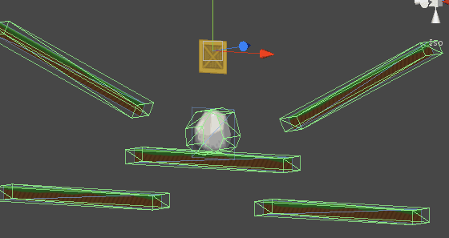

Documentation
Script Reference
Forum
Documentation
Script Reference
Forum
Do not use just one static sprite batcher for your entire level if the level spans multiple screens of content. Unity will draw the entire static sprite batcher, regardless if only 1% of it is visible. Split them up into logical sections - rooms, pages, etc. Keep an eye on the Stats view in Unity to make sure you aren't drawing a lot more than you expect.
Use the collider set-up to mask impassable ground and platforms. Here is the previous scene with colliders set-up as an example.
